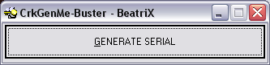
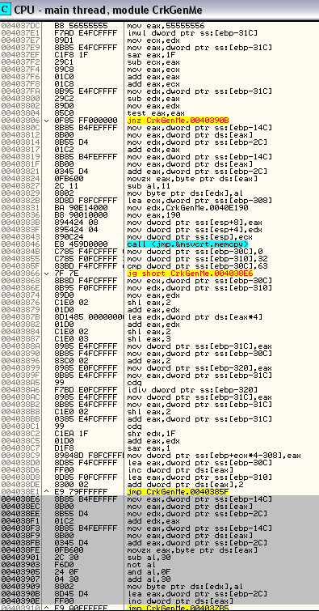

Date de publication : vendredi 30 juin 2006
Auteur : BeatriX
6.Créer un demi-keygen
Voici venu le temps des rires et des chants... nous allons donc nous pencher sur la réalisation d'un keygen avec masm32.
Notre demi-keygen va être le plus simple de tous les keygens de la TERRRREEEE.... voyez plutôt :

Voilà, c'est tout. Un gros bouton va faire l'affaire et tout le travail. Je m'explique. Voici les étapes que notre demi-keygen va accomplir :
- 1 - On récupère le NOM saisi dans le champ NAME de CrkGenMe.exe
- 2 - On récupère les nombres N1, N2 et N3 calculés par CrkGenMe.exe
- 3 - On recherche le SERIAL par bruteforce à partir de N1, N2 et N3.
- 4 - On envoie le SERIAL trouvé dans le champ SERIAL de CrkGenMe.exe
Pour bruteforcer le SERIAL, j'ai rippé les routines "utiles" qui calculent les nombres S1, S2 et S3. J'ai opté pour le bruteforce car l'algorithme travaille sur chaque caractère séparément et ne résiste donc absolument pas à une attaque exhaustive. Ceci signifie que le bruteforce se fait en une fraction de seconde. Il est donc bien inutile de vouloir reverser les algorithmes de calcul. Voici une partie du code utile pour calculer S1 :

On voit le code sur fond gris complètement noyé dans du junkcode !
Voici le bruteforce qui calcule la première partie du SERIAL à partir de S1 (vous reconnaitrez la portion utile ci-dessus) :
; ====================================== Partie 1 du serial
mov lpNumberOfBytesWritten, 0
push lpNumberOfBytesWritten
push 15
push offset CHAINE1
push 4109D0h
push hProcess
call ReadProcessMemory
mov esi, offset CHAINE1
mov edi, offset NUM1
mov compteur, 0
Partie1:
.if byte ptr [esi]!=0
mov byte ptr [edi], 41h
mov eax,compteur
mov compteur,eax
mov eax,55555556h
imul compteur
mov ecx,edx
mov eax, compteur
sar eax,1Fh
sub ecx,eax
mov eax,ecx
add eax,eax
add eax,ecx
mov edx, compteur
sub edx,eax
mov eax,edx
.if eax==0
@@:
movzx eax, byte ptr [edi]
sub al, 41h
not al
and al, 0Fh
add al, 30h
cmp al, byte ptr [esi]
je @F
inc byte ptr [edi]
jmp @B
@@:
inc edi
inc esi
inc compteur
jmp Partie1
.else
movzx eax, byte ptr [esi]
mov byte ptr [edi], al
inc edi
inc esi
inc compteur
jmp Partie1
.endif
.endif
Ce gros calcul peut se réduire en C++ comme ceci ( merci à Skirby pour la source ) :
for (i = 0; i < Mylstrlen(pSerial[0]); i++) {
if (i % 3 == 0) {
pSerial[0][i] = (pSerial[0][i] - 'A') + '0';
pSerial[0][i] = (0x0F & ~(pSerial[0][i] - '0')) + '0';
}
Il s'agit donc d'opérations arithmétiques effectuées sur le SERIAL. Nous n'avons pas vraiment besoin de comprendre le fonctionnement de tels routines pour pouvoir coder le keygen. Je ne vais pas détailler chacune des routines et je vous fournis donc le keygen ICI.
Copyright (C)- FRET (2006)